Where Innovation Meets Design
Welcome to Mavro
Welcome to Mavro, a theme built not just for functionality, but for a seamless journey of creating a brand that stands out. Mavro is more than just a template – it's the foundation of your next great eCommerce venture. It embodies precision, flexibility, and cutting-edge design tailored to meet the dynamic needs of modern entrepreneurs. In a digital world where every detail matters, Mavro ensures your store isn't just another website, but a powerful, memorable experience.
What Sets Mavro Apart?
- Next-Level Customization: With Mavro, you aren't confined to pre-made designs. You hold the reins to shape your store exactly the way you envision it – no compromises.
- User-Centric Experience: Designed with your customers in mind, Mavro ensures every interaction is smooth, intuitive, and optimized for conversion.
- Built-in App Functionality: Mavro seamlessly integrates essential apps for marketing, analytics, and more, without any hassle.
- Performance First: Speed, reliability, and mobile optimization are at the core of Mavro, delivering a flawless experience across all devices.
- Seamless Integration: Whether it's advanced apps or marketing tools, Mavro integrates effortlessly with your existing business systems.
Theme Requirements
- Shopify Plan: Basic Shopify or higher (some features require Advanced plan).
- Supported Browsers: Chrome, Firefox, Safari, Edge (latest 2 versions).
- Theme Version: Mavro v1.0.0 – requires Shopify Online Store 2.0.
Start now, and let's build your digital legacy with Mavro.
How to Install Mavro Theme
Install
-
Follow these simple steps to get started with your Mavro theme and transform your store into a professional online shop.
-
-
Common Steps
Create a Shopify Partner Account
Log Into Your Partner Account
Create Your Store
Log Into Your Store
-
Step 1. Install From Shopify Store
From your Shopify dashboard
go to Online Store > Themes
go to Popular Themes
Click Visit Theme Store
Search Mavro and install it
> Shown below
One----Two----
 Three----
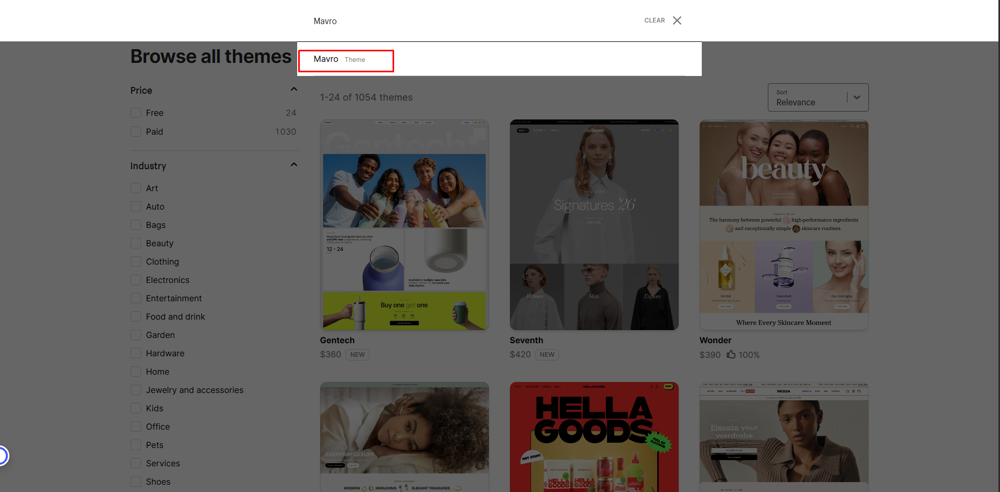
Three----
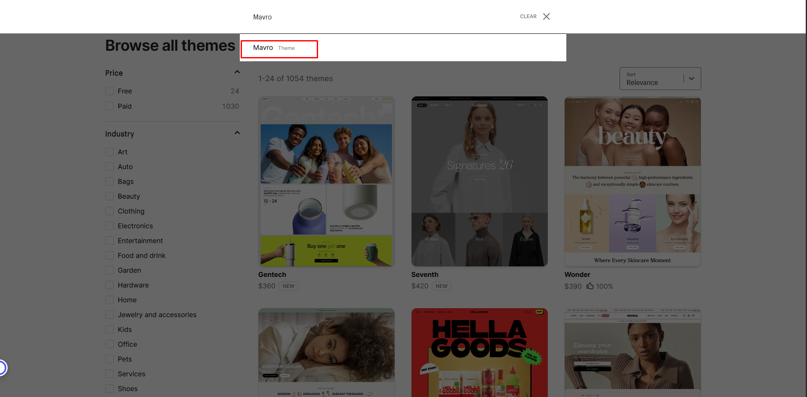
-
Step 2. Installation Manual
Step 1: Download the Theme FileOnce you've purchased the Mavro theme, you'll receive a .zip file. Download and save it to your computer before proceeding.
-
Step 2: Upload the Mavro Theme
On the Themes page, click Upload Theme in the top-right corner. Select the .zip file you downloaded and click Upload. Wait for the upload to complete.
One ------ 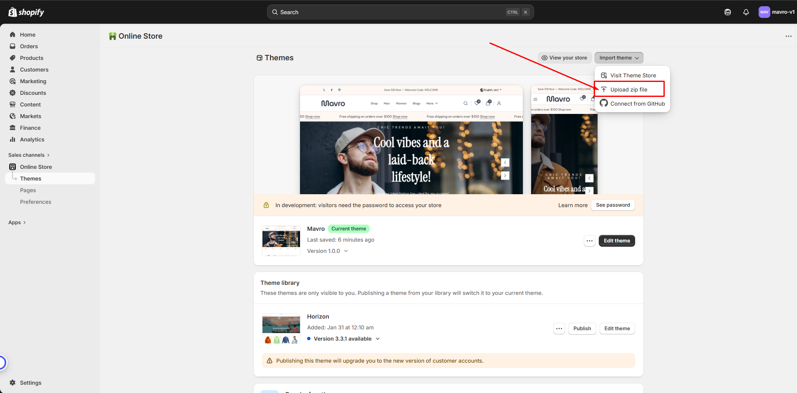 Two ------ 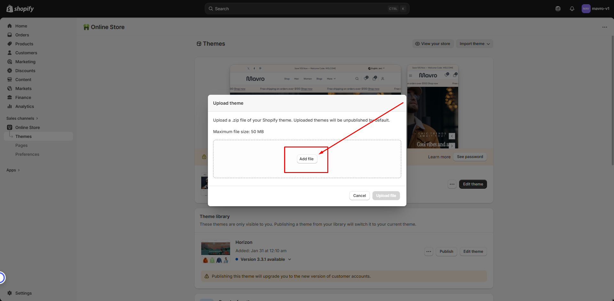 -
Step 3: Publish the Mavro Theme
Once uploaded, the theme will appear in your theme library. Click Actions next to Mavro and select Publish to activate it.
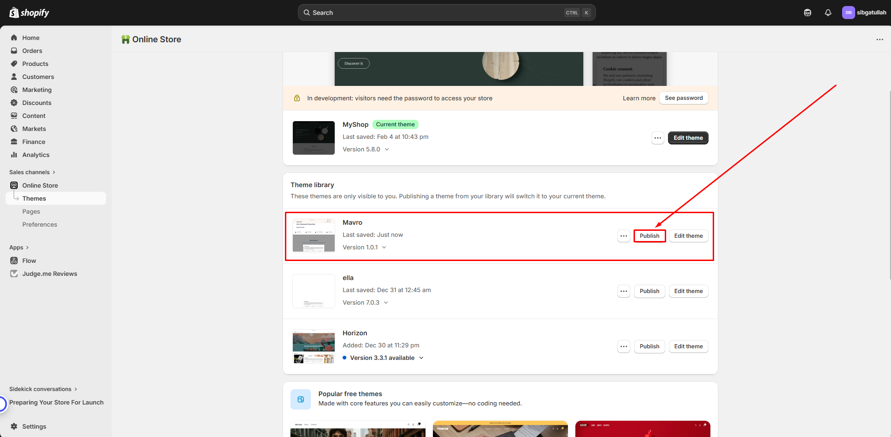 -
Step 4: Customize Your Theme
After publishing, click Customize to begin personalizing your store. Adjust colors, fonts, layouts, and other elements to match your brand using the intuitive editor.
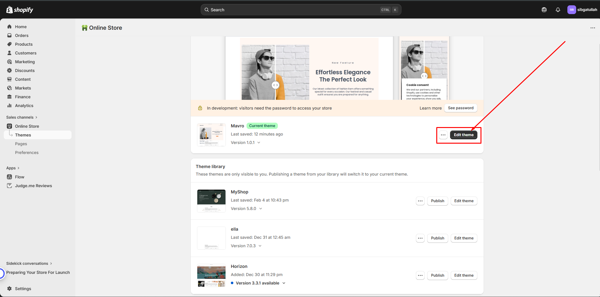 -
Step 5: Test Your Store
Before going live, preview your store on desktop, tablet, and mobile to ensure everything looks and works as expected. Check all links, buttons, and forms.
-
Install Essential Apps for Maximum Performance
Apps Install
-
To ensure your store runs at its full potential, Mavro integrates seamlessly with a range of powerful apps. These apps enhance functionality, optimize performance, and help you provide a better shopping experience for your customers.
-
Why Install These Apps?
-
Enhanced Features:
Unlock additional capabilities such as advanced marketing tools, shipping options, and product management features.
-
Optimized for Mavro:
All recommended apps are designed to work seamlessly with Mavro, ensuring reliability without compatibility issues.
-
Boost Store Performance:
From boosting conversions to tracking analytics, these apps help you stay ahead of the competition.
How to Install Apps
-
Browse the App Store:
Head to the Shopify App Store to explore apps that best suit your needs.
-
One-Click Installation:
Install apps directly into your store with a few simple clicks.
-
Configure and Customize:
Adjust app settings to fit your store's specific requirements.
Recommended Apps for Mavro
-
Judge.me Product Reviews:
Collect and display customer reviews to build trust and social proof.
-
Klaviyo – Email Marketing:
Powerful email and SMS marketing automation to grow your customer base.
-
Loox – Photo Reviews:
Collect photo and video reviews to increase credibility and conversions.
-
Privy – Popups & Email:
Create targeted popups, banners, and spin-to-win campaigns to capture leads.
-
ReConvert Upsell & Cross-sell:
Boost average order value with post-purchase upsell and thank-you page offers.
-
Plug in SEO:
Automatically detect and fix SEO issues to improve search visibility.
-
Tidio Live Chat:
Engage customers in real time with live chat and AI-powered chatbot support.
-
Wishlist Plus:
Let customers save their favorite products for easy access and future purchases.
Get the most out of Mavro by installing the right apps for your business needs.
Effortless & Secure
Customer Registration
-
At Mavro, we believe in making every step of the shopping journey simple, secure, and convenient. Our customer registration feature is designed with ease of use and security in mind, ensuring every user can create an account in just a few clicks.
-
How to Enable Customer Accounts
Step 1: Go to Shopify SettingsIn your Shopify admin, navigate to Settings → Customer accounts.
-
Step 2: Choose Account Type
Select between Optional (customers can checkout as guests or with an account) or Required (account required to checkout). We recommend keeping it optional for the best conversion rate.
-
Step 3: Enable New Customer Accounts (Recommended)
Shopify's new customer accounts use a one-click login link sent to the customer's email — no password required. This reduces friction and improves sign-up rates significantly.
-
Key Features
Quick and Easy Sign-Up:Customers register with minimal steps, improving the overall shopping experience.
-
Secure & Private:
All user data is protected with top-tier encryption, ensuring complete privacy.
-
Account Management:
Customers can manage personal details, view order history, and manage multiple address from their account dashboard.
Transparent and Flexible Shipping for Every Customer
Shipping Rates
-
At Mavro, we understand that shipping is a crucial part of your customer's shopping experience. Mavro fully supports flexible and transparent shipping options, letting you tailor the shipping experience to your unique business needs.
-
How to Set Up Shipping Rates
Step 1: Go to Shipping SettingsIn your Shopify admin, go to Settings → Shipping and delivery.
-
Step 2: Create Shipping Zones
Add shipping zones based on countries or regions you ship to. For each zone, define your available rates.
-
Step 3: Add Shipping Rates
Within each zone, add flat rates, price-based rates, or weight-based rates. You can also integrate real-time carrier rates from services like UPS, FedEx, or USPS (requires Shopify Advanced plan or higher).
-
Key Features
Customizable Shipping Rates:Set flat rates, weight-based rates, or location-based rates to offer the best options for your customers.
-
Free Shipping Threshold:
Offer free shipping on orders over a specific amount to incentivize larger purchases. This can also be displayed in the cart progress bar section of Mavro.
-
Multiple Shipping Methods:
Offer standard, expedited, and international shipping, giving customers flexibility in how they receive their orders.
-
Why Transparent Rates Matter:
Clear shipping rates reduce cart abandonment. Mavro's cart progress bar can display how close a customer is to earning free shipping, motivating them to add more to their order.
Your Brand, Your Identity
Logo and Favicon
-
With Mavro, your brand identity is always front and center. Easily integrate your logo and favicon to ensure your store looks professional and instantly recognizable across all platforms.
-
How to Add Your Favicon
Go to Theme Settings → FaviconIn the theme customizer, navigate to Theme settings → Favicon.
-
Logo Settings ----- 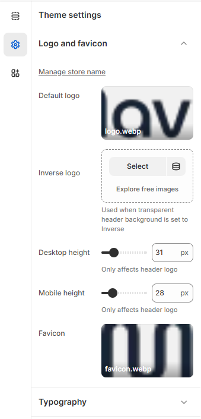
- Manage Store Name – Set or update your store name from theme settings.
- Default Logo – Upload your primary logo that appears in the header.
- Inverse Logo – Upload an alternative logo version used when the header background is set to transparent or inverse style.
- Desktop Height – Adjust the logo height for desktop devices (only affects the header logo).
- Mobile Height – Adjust the logo height for mobile devices (only affects the header logo).
- Favicon – Upload a small icon that appears in the browser tab to represent your brand.
Mavro Theme –
Theme Settings
-
Mavro provides comprehensive theme settings that allow you to fully customize your store’s design, functionality, and user experience without touching any code.
-
From your Shopify dashboard
go to Settings
-
Settings ----- 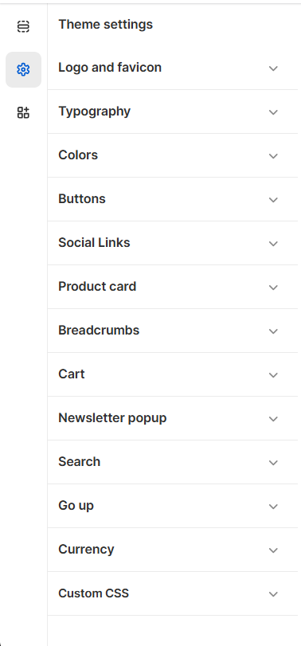
- Logo and Favicon – Upload and manage your store logo and browser favicon.
- Typography – Customize fonts, sizes, and text styles across the store.
- Colors – Control brand colors, backgrounds, and accent styles.
- Buttons – Customize button styles, shapes, and colors.
- Social Links – Add and manage your social media profile links.
- Product Card – Configure product card layout and display options.
- Breadcrumbs – Enable and customize breadcrumb navigation.
- Cart – Manage cart layout and cart behavior settings.
- Newsletter Popup – Configure email subscription popup settings.
- Search – Customize search layout and functionality.
- Go Up – Enable and style the scroll-to-top button.
- Currency – Manage currency display and selector options.
- Custom CSS – Add custom CSS for advanced design control.
Typography
Typography controls the fonts, sizes, and text styling across your entire store. A well-chosen font combination strengthens your brand identity and improves readability.
- From your Shopify admin, go to Online Store → Themes.
- Find the Mavro theme and click Customize.
- Click Theme settings → Typography.
-
-
Typography Options
Heading Font:Controls the font used for all headings (H1–H6) across your store. Choose a font that reflects your brand's personality — bold and modern, elegant and serif, or clean and minimal.
-
Body Font:
Controls the font used for body text, descriptions, and general content. For best readability, choose a clean, legible font at a comfortable size (16px recommended).
-
Font Size Scale:
Mavro uses a consistent type scale to maintain visual hierarchy. Adjust the base font size to scale headings and body text proportionally across all devices.
-
Google Fonts Integration:
Mavro supports Shopify's built-in font picker which includes hundreds of Google Fonts and premium typefaces. Browse and preview fonts directly inside the theme customizer.
-
Best Practices:
Limit your store to 2 font families maximum — one for headings and one for body text. Mixing too many fonts creates visual clutter and slows down page load times.
-
Your Brand's Identity, Perfected
Color Schema
-
Colors are the essence of your brand identity. With Mavro, you gain full control over the color scheme, aligning your store's design with your brand's personality and vision.
-
Color Settings ----- 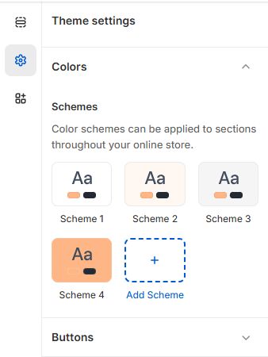
-
How to Change Colors
Go to Theme Settings → ColorsIn the customizer, click Theme settings → Colors. Here you can define your primary, secondary, and accent colors, as well as background and text colors for different sections.
-
Color Schema Groups:
Mavro uses Color Schemas — groups of coordinated colors you assign to different sections. This lets you easily create visual variety across your homepage while maintaining brand consistency. For example, one schema might be used for dark sections and another for light ones.
-
Predefined Color Schemes:
Choose from a variety of pre-built palettes or start with one and customize it to match your brand exactly.
-
Color Accessibility:
Mavro's color system is designed with contrast ratios in mind. Ensure your text colors have sufficient contrast against background colors for all users, including those with visual impairments. Aim for a minimum contrast ratio of 4.5:1 for body text.
Simplify Your Shopping Experience
Product Card
-
The product card is designed to present your products in the most attractive and user-friendly way. Each card is displayed in a sleek, organized layout that highlights your product's key details, helping customers browse and make purchasing decisions quickly.
-
Card Style A -----
 Card Style B -----
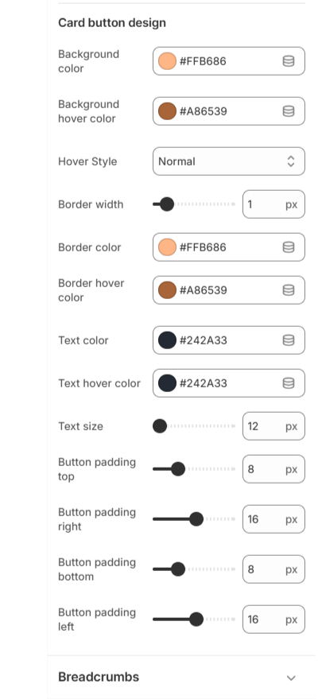
Card Style B -----
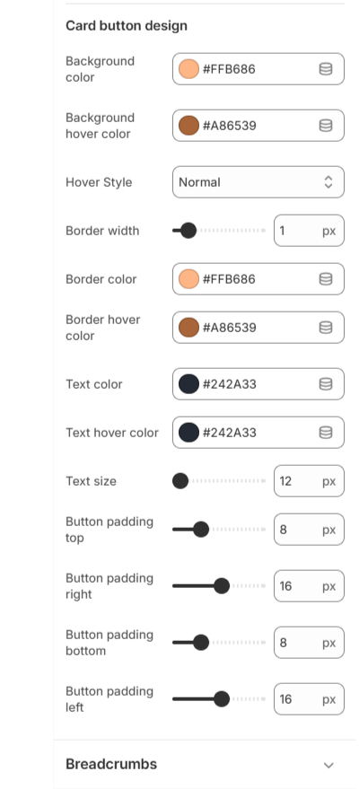
-
Product Card Options
Card Style:Choose between multiple card layouts — from minimal to feature-rich — depending on how much product detail you want to surface in collection grids.
-
Image Ratio:
Set a consistent image ratio (square, portrait, or landscape) across all product cards to ensure a uniform, professional grid layout regardless of your original image dimensions.
-
Quick View Option:
Enable Quick View to let customers preview product details without leaving the collection page, speeding up the browsing experience.
-
Hover Effect:
Show a second product image on hover, allowing customers to see different angles or color variants directly from the collection grid.
-
Badges:
Automatically display labels like Sale, New, or Sold Out on product cards to draw attention to key products and create urgency.
-
Vendor & Rating Display:
Optionally show the product vendor name and star rating (if a reviews app is installed) directly on the card to build trust at first glance.
A Global Shopping Experience
Multiple Currencies
-
Mavro supports multiple currencies, making it easy to cater to customers from around the world. Your store can automatically detect a visitor's location and display prices in their local currency.
-
Currency Selector -----

-
How to Enable Multiple Currencies
Step 1: Enable Shopify MarketsIn your Shopify admin, go to Settings → Markets. Add your target markets and enable the currencies for each region.
-
Step 2: Enable the Currency Selector in Mavro
In the theme customizer, go to Header settings (or Footer settings) and enable the Currency selector toggle. This adds a currency switcher that customers can use to view prices in their preferred currency.
-
Note on Currency Conversion:
Prices displayed in foreign currencies are converted using Shopify's exchange rates, which are updated regularly. If you want to set fixed prices per currency, you can do so in Settings → Markets for precise control.
-
Improved User Experience:
Customers are significantly more likely to complete a purchase when they can view prices in their own currency, reducing confusion and improving conversion rates.
Find What You're Looking for, Instantly
Quick Search
-
Quick Search enables customers to find products faster and more efficiently. With just a few keystrokes, users can instantly discover what they need, reducing bounce rates and improving the shopping experience.
-
Search Panel ----- 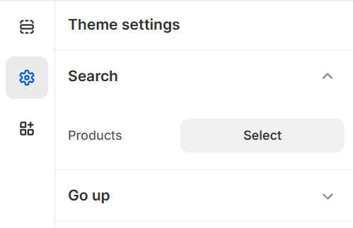
-
Search Features
Predictive Search:As soon as the customer starts typing, Mavro's search instantly surfaces relevant products, collections, pages, and articles — powered by Shopify's native predictive search API.
-
Product Thumbnails in Results:
Search results display product images, names, and prices directly in the dropdown, giving customers a rich preview without navigating away.
-
Search for More Than Products:
Configure search to also surface collections, blog articles, and pages, making it a complete site-wide search tool.
-
How to Configure Search:
In the theme customizer, go to Theme settings → Search. Choose which resource types to include in results and enable or disable the search icon in the header.
Effortless Shopping Experience with
Cart and Progress Bar
-
Mavro's Cart and Progress Bar provide a smooth, engaging shopping experience. Every step of the purchase process is clearly visible, keeping customers informed and motivated to complete their order.
-
Cart Settings
Cart Type:Choose between a Drawer Cart (slides in from the side without leaving the page) or a dedicated Cart Page. The drawer cart is recommended for a faster, more modern shopping experience.
-
Cart Notes:
Enable a cart notes field so customers can add special instructions for their order (e.g., gift messages, delivery notes).
-
Progress Bar – Free Shipping Meter
How It Works:The progress bar shows customers how much more they need to spend to qualify for free shipping. As they add items, the bar fills up and updates in real time — a powerful conversion tool.
-
How to Enable:
In the customizer, go to Theme settings → Cart and enable the Free shipping progress bar. Enter your free shipping threshold (e.g., $50). Make sure your Shopify shipping settings reflect this same threshold.
-
Upsell in the Cart:
Mavro allows you to enable product recommendations inside the cart drawer, giving customers a last-minute opportunity to add related items before checkout.
Go Up Button
Go Up Button
-
The Go Up Button is a small but effective feature that helps visitors navigate back to the top of any page with a single click. Especially useful on long product pages, blog posts, or collection pages with many items.
-
Go Up Button ----- 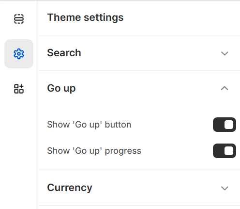
-
How to Enable
Go to Theme Settings → Go Up ButtonToggle the Go Up button on or off in your theme settings. Once enabled, it appears in the bottom-right corner of the screen and becomes visible only after the user has scrolled down a certain amount — keeping the interface clean on initial page load.
-
Key Benefits:
Improves navigation on content-heavy pages, reduces frustration for mobile users, and gives your store a polished, professional feel.
Mavro Theme –
Header Section
-
The Header section on the Home Page allows you to manage the Top Bar, announcements, and Mega Menu blocks to create a structured and conversion-focused navigation experience.
- Add Announcement – Add multiple announcement blocks to highlight offers, updates, or important store messages.
- Mega Menu Carousel – Add a visually engaging carousel inside the mega menu for featured collections or promotions.
- Mega Menu – Create advanced dropdown menus with multiple columns, links, and promotional content.
-
One ----- 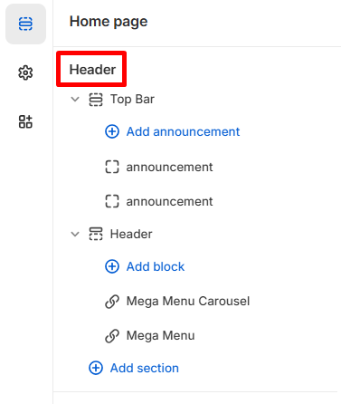
-
Top Bar
The Top Bar and Social Links settings allow you to enhance your store’s header experience by displaying announcements, navigation controls, and social media connections in a fully customizable way.
-
One ----- 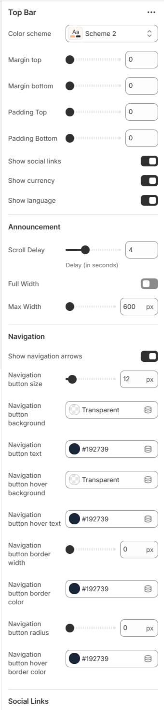 Two ----- 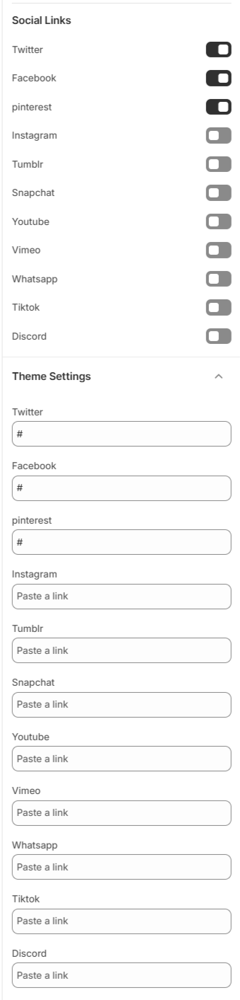
- Color Scheme – Choose the visual style of the top bar.
- Margin & Padding – Adjust spacing for better layout control.
- Show Social Links – Enable or disable social media icons in the top bar.
- Show Currency & Language – Display currency and language selectors.
- Announcement Settings – Control scroll delay, full width layout, and maximum width of announcement text.
- Navigation Controls – Customize navigation arrows, button size, background color, text color, hover effects, border width, and radius.
- Social Platform Links – Add and manage profile links for: Twitter, Facebook, Pinterest, Instagram, Tumblr, Snapchat, YouTube, Vimeo, WhatsApp, TikTok, and Discord.
-
These combined settings help you create a professional, interactive, and brand-aligned header experience while increasing social engagement.
-
Header
The Mavro header is your store's primary navigation hub. It is fully customizable, allowing you to control the layout, branding, navigation menus, and interactive elements that customers see on every page.
-
One ----- 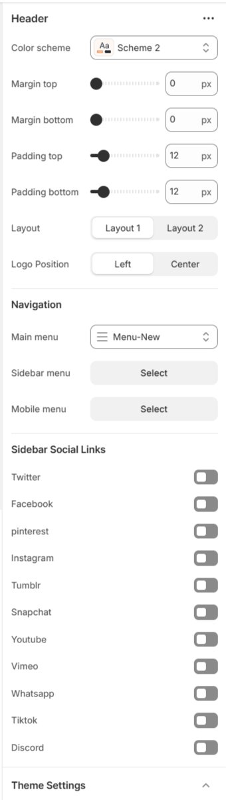 Two ----- 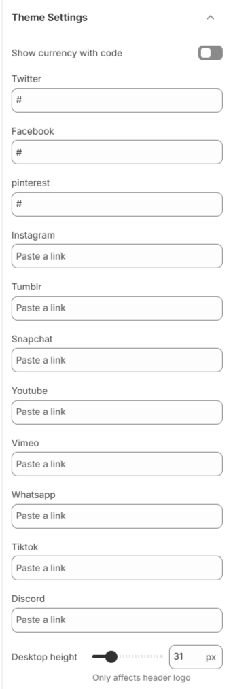 Three ----- 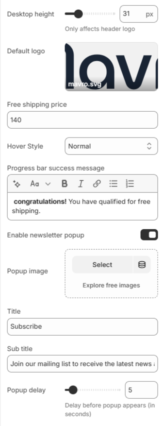
- Header Layout – Select color scheme, adjust margin & padding, choose layout style (Layout 1 / Layout 2), and set logo position (Left or Center).
- Navigation Settings – Assign main menu, sidebar menu, and mobile menu for structured store navigation.
- Sidebar Social Links – Enable or disable social icons such as Twitter, Facebook, Pinterest, Instagram, Tumblr, Snapchat, YouTube, Vimeo, WhatsApp, TikTok, and Discord.
- Currency Display – Option to show currency with code.
- Free Shipping Settings – Set free shipping price threshold, choose hover style, and customize the progress bar success message.
- Newsletter Popup – Enable popup, upload popup image, set title & subtitle, and control popup delay timing.
- Logo Height Control – Adjust desktop logo height (affects header logo display).
-
These combined settings allow you to create a fully optimized, branded, and conversion-focused header experience while improving engagement and promotional visibility.
-
Mega Menu Carousel and Mega Menu
-
One ----- 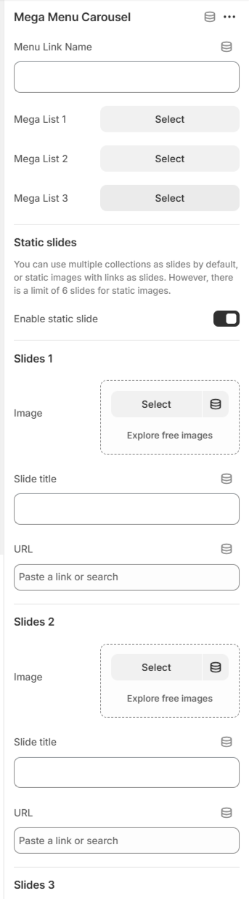 Two ----- 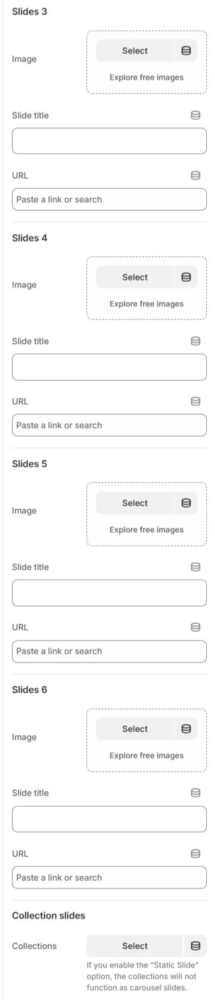
Mavro Theme – Template Settings
Contact Form
-
The Contact Form section allows customers to send inquiries directly from your store. It is fully customizable to match your brand style and layout preferences.
-
Color Settings -----
- Color Scheme – Select the section color style.
- Padding – Adjust top and bottom spacing.
- Margin – Control outer spacing of the section.
- Background Image – Add a custom background image.
- Gradient Colors – Customize left and right gradient colors.
- Title – Set the contact section heading.
- Short Description – Add supporting text for customers.
-
These options help you create a clean, professional, and brand-focused contact experience for your customers.
Mavro Theme – Section Settings
After Before Slider
-
The After Before Slider allows you to visually compare two images side by side using an interactive drag slider. Perfect for product comparisons, transformations, or before-and-after results.
- Color Scheme – Choose the section style (e.g., Scheme 2).
- Padding & Margin – Adjust top and bottom spacing.
-
Slider Settings
Slider Width – Control container width layout. - Desktop Height – Set slider height for desktop devices.
- Tablet Height – Set slider height for tablet devices.
- Mobile Height – Set slider height for mobile devices.
-
Image Settings
Position – Choose Before/After image placement (Left or Right). - Before Image – Upload the original image.
- After Image – Upload the comparison image.
-
Content Area
Hide/Show Content – Enable or disable text overlay. - Content Layout – Align content (Start, Center, End).
- Text Align – Control text alignment (Left, Center, Right).
- Subheading – Add a small label above heading.
- Heading – Main section title.
- Heading Size – Adjust heading size (Small, Medium, Large).
- Paragraph – Add descriptive text.
- Button – Add call-to-action button text.
- Button Link – Attach product or page link.
-
Button Settings
Type – Select button style (Primary, Secondary). - Hover Style – Choose hover animation style.
- Size – Adjust button size (Small, Normal, Large).
-
This section is ideal for showcasing transformations, product improvements, or visual comparisons in a clean and engaging way.
Mavro Theme – Section Settings
Blogs
-
The Blogs section allows you to showcase your latest blog posts in a clean and organized card layout. Perfect for sharing news, fashion tips, updates, and brand stories.
- Color Scheme – Select the section style (e.g., Scheme 1).
- Margin Top – Adjust spacing above the section.
- Margin Bottom – Adjust spacing below the section.
- Title – Set the main section heading (e.g., THE STYLE JOURNAL).
- Short Description – Add supporting text below the title.
- Enable “View All” Button – Show or hide the button linking to the full blog page.
- Blog – Select which blog to display posts from.
-
This section helps you engage visitors with valuable content while maintaining a stylish and brand-consistent presentation.
Mavro Theme – Section Settings
Blogs Bar
-
The Blogs Bar section highlights blog categories or featured articles in a compact and stylish horizontal layout. It helps visitors quickly explore your latest stories.
- Color Scheme – Choose the section style (e.g., Scheme 1).
- Heading – Set the section title (e.g., The Style Journal).
- Button Label – Customize the button text (e.g., View All Articles).
- Button Link – Attach a blog or article page link.
-
Button Settings
Type – Select button style (Primary, Secondary). - Hover Style – Choose hover interaction style.
- Size – Adjust button size (Small, Normal, Large).
-
Layout Settings
Padding Top – Control top inner spacing. - Padding Bottom – Control bottom inner spacing.
- Show Arrows on Mobile – Enable navigation arrows for mobile view.
-
This section provides a modern and space-efficient way to promote blog content while maintaining a clean store layout.
Mavro Theme – Section Settings
Brands
-
The Brands section allows you to display brand logos or partner logos in a responsive grid or sliding marquee layout. It helps build trust and showcase collaborations.
- Color Scheme – Select the section style (e.g., Scheme 1).
- Margin Top – Adjust spacing above the section.
- Margin Bottom – Adjust spacing below the section.
- Padding Top – Control inner spacing at the top.
- Padding Bottom – Control inner spacing at the bottom.
-
Swiper Settings
Enable Auto Sliding (Marquee) – Automatically scroll logos continuously. - Sliding Speed – Control animation speed (higher value = slower movement).
- Gap Between Cards – Adjust spacing between logo items.
-
Advanced Option
Custom CSS – Add custom styling for advanced design control. -
This section enhances brand credibility while keeping your storefront visually engaging and professional.
Mavro Theme – Section Settings
Collection Carousel
-
The Collection Carousel section allows you to showcase your collections in a smooth, scrollable slider format. It helps customers explore featured categories quickly and visually.
- Color Scheme – Select the section style (e.g., Scheme 1).
- Margin Top – Adjust spacing above the section.
- Margin Bottom – Adjust spacing below the section.
- Padding Top – Control inner spacing at the top.
- Padding Bottom – Control inner spacing at the bottom.
- Card Radius – Adjust corner roundness of collection cards.
- Full Width Image – Enable full-width collection images.
- Custom CSS – Add custom styling for advanced customization.
- Select Collection – Choose which collections to display in the slider.
-
This section creates a dynamic and modern browsing experience while keeping your collections visually organized and engaging.
Mavro Theme – Collection Marquee Settings
Collection Marquee
-
Collection Marquee provides an animated scrolling showcase of your collections, allowing you to highlight products and create visual impact on your store.
- Color Scheme – Select the section style (e.g., Scheme 1).
- Margin Top – Adjust spacing above the section.
- Margin Bottom – Adjust spacing below the section.
- Padding Top – Control inner spacing at the top.
- Padding Bottom – Control inner spacing at the bottom.
- Moving Direction – Choose scrolling direction: Normal or Reverse.
- Normal Speed – Set scrolling speed (e.g., 15).
- Item Gap – Adjust spacing between items (e.g., 80px).
- Custom CSS – Add custom CSS to style marquee or items.
-
Item Settings
Configure each marquee item: - Image – Upload image (preferably 140×80 px) or explore free images.
- Text – Add optional text for the item.
- Link – Add a link or search for products/collections.
-
These settings allow you to create a dynamic, engaging, and fully customizable collection marquee that captures customer attention.
Mavro Theme – Collections Grid Settings
Collections Grid
-
Collections Grid provides an organized and visually appealing layout for displaying multiple collections in a structured grid format.
- Color Scheme – Choose the color style for the grid section (e.g., Scheme 2).
-
Card Layout – Select card style for collection items:
Boxed Button
- Grid Gap – Set spacing between collection cards (e.g., 24px).
-
Columns – Adjust the number of columns per device:
Desktop Columns (e.g., 4)Tablet Columns (e.g., 3)Mobile Columns (e.g., 1–2)
- Button Text – Customize the text displayed on collection buttons (e.g., “Browse”).
-
Button Type & Style – Configure button appearance:
Type (e.g., Primary)Hover Style (e.g., Normal)Size (e.g., Normal)
- Custom CSS – Add custom styling for the grid or buttons.
-
These options allow you to create a clean, responsive, and fully customizable collections grid for an engaging browsing experience.
Mavro Theme – Countdown Settings
Countdown
-
Countdown adds urgency to your store by displaying a live timer for sales, promotions, or product launches, encouraging customers to take action.
- Color Scheme – Select the color style for the countdown section (e.g., Scheme 1).
- Background Image – Upload an image or explore free images for the countdown background.
- Subtitle – Add a small descriptive text above the main countdown title (e.g., “LIMITED QUANTITIES.”).
- Title – Set the main heading for the countdown (e.g., “Deal of The Day”).
- End Date & Time – Specify the countdown end date (YYYY-MM-DD) and time (HH:MM:SS).
- Button Label & Link – Customize the call-to-action text (e.g., “Shop Now”) and add a destination link.
- Custom CSS – Apply custom styling to the countdown section.
-
These settings let you create a visually striking and effective countdown timer to boost conversions and highlight limited-time offers.
Mavro Theme – Custom Recommended Settings
Custom Recommended
-
Custom Recommended allows you to manually curate and display recommended product selections, providing personalized suggestions for your customers.
- Title – Set the heading for the recommended products section (e.g., “Related Products”).
-
Metafields ID – Use a metafield identifier to fetch
custom recommended products (e.g.,
custom.related_products). -
Padding – Adjust spacing around the section:
Padding Top (e.g., 40px)Padding Bottom (e.g., 40px)
- Theme Settings – Apply any relevant theme-wide settings for consistent styling.
- Custom CSS – Add custom styling to modify the look of the section.
-
These settings allow you to control and highlight specific products for recommendations, enhancing cross-selling and improving customer engagement.
Mavro Theme – FAQ Section Settings
FAQ Section
-
FAQ Section displays frequently asked questions in an expandable accordion format, helping customers find answers quickly and reducing support queries.
- Color Scheme – Select the color style for the FAQ section (e.g., Scheme 1).
-
Title & Short Description – Set the section heading and
brief introductory text:
Title (e.g., “Find Answers Here!”)Short Description (e.g., “We're available 24/7 to assist. Just let know what we can help you with and we'll do our best.”)
-
FAQ Image Settings – Upload or select images/icons for
the FAQ section:
FAQ ImageFAQ Icon
-
Support Section – Configure optional support content:
Support Title (e.g., “Support”)Support Description (e.g., “Get instant support via our live chat services that helps.”)Button Text & Link (e.g., “LIVE CHAT” with a link)Button Type, Hover Style, Size (e.g., Primary, Normal, Normal)
- Text Color – Customize the main text color (e.g., #000000).
-
Padding – Adjust spacing around the section:
Padding Top (e.g., 0)Padding Bottom (e.g., 0)
-
FAQ Items – Add individual questions and answers:
Question (e.g., “Sample Question?”)Answer (e.g., “This is a sample answer to the question.”)
- Custom CSS – Add custom styling to the FAQ section or individual items.
-
These settings allow you to create a comprehensive, user-friendly FAQ section to improve customer support and reduce common inquiries.
Mavro Theme – Featured Products Settings
Featured Products
-
Featured Products highlights selected or best-selling products in a dedicated section, allowing you to showcase key items and drive conversions.
- Color Scheme – Choose the color style for the section (e.g., Scheme 1).
-
Margin & Padding – Adjust spacing around the section:
Margin Top (e.g., 0)
Margin Bottom (e.g., 0)
Padding Top (e.g., 0)
Padding Bottom (e.g., 0)
- Select Collection – Choose the collection of products to display in this section.
-
Swiper Settings – Configure the product slider:
Content Alignment (Left, Center, Right)
Enabled Loop
Enabled Autoplay
Disable on Interaction
Sliding Delay (e.g., 3500 ms)
Sliding Speed (e.g., 2000 ms)
Enabled Navigation
Enabled Scrollbar
- Theme Settings – Apply relevant theme-wide settings for consistency.
- Custom CSS – Add custom styling to the section or slider.
-
These settings allow you to create a dynamic, engaging featured products section that draws attention to key items and increases sales.
Mavro Theme – Full Width Testimonials Settings
Full Width Testimonials
-
Full Width Testimonials displays customer reviews in a wide-layout format, allowing you to showcase social proof and build trust with your audience.
- Color Scheme – Select the color style for the testimonial section (e.g., Scheme 1).
-
Margin & Padding – Adjust spacing around the section:
Padding Top (e.g., 0)
Padding Bottom (e.g., 0)
Margin Top (e.g., 0)
Margin Bottom (e.g., 0)
-
Swiper Settings – Configure the testimonial slider:
Enable Loop
Enable Autoplay
Sliding Delay (e.g., 3500 ms)
Sliding Speed (e.g., 2000 ms)
Enable Navigation
- Star Color – Customize the color of the rating stars (e.g., #FFD700).
-
Testimonial Item – Configure each testimonial:
Customer Image – Upload or select an image.
Customer Name (e.g., “Max Sulikas”)
Customer Location (e.g., “Customer, USA”)
Review Message – Text of the testimonial.
Rating – e.g., 5.0
Reviewed Product – Select the product the testimonial relates to.
- Custom CSS – Add custom styling for the testimonial section or items.
-
These settings allow you to create a visually appealing, full-width testimonial section that highlights customer experiences and enhances trust.
Mavro Theme – Hero Slider Settings
Hero Slider
-
Hero Slider allows you to create eye-catching, full-screen homepage sliders with images, text, and call-to-action buttons, making a strong visual impact on visitors.
-
Margin – Adjust spacing around the slider:
Margin Top (e.g., 0)
Margin Bottom (e.g., 0)
-
Swiper Settings – Configure slider behavior:
Only Image Slider
Enable Loop
Enable Parallax
Enable Autoplay
Sliding Delay (e.g., 3500 ms)
Sliding Speed (e.g., 2000 ms)
Enable Navigation
Enable Pagination
Pagination Clickable & Dynamic Bullets
Enable Scrollbar
-
Slide Settings – Configure individual slides:
Slide Image – Upload or select image (preferred 1922×775 px)
Slide Mobile Image – Upload or select mobile image (preferred 390×750 px)
Content Alignment – Left, Center, Right
Subtitle (e.g., “New Fashion”)
Title (e.g., “Creative Fashion & Lifestyle”) and Title Width (e.g., 450)
Short Info – Description text and Short Info Width (e.g., 410)
Title, Subtitle & Short Info Colors (e.g., #FFFFFF)
Show Gradient
Button Text & Link (e.g., “Shop Now” with URL)
Button Type, Hover Style, Size (e.g., Primary, Normal, Normal)
- Custom CSS – Add custom styling for the slider or individual slides.
-
These settings allow you to create visually stunning sliders with customizable content, driving engagement and highlighting key products or collections.
Mavro Theme – New Arrivals Settings
New Arrivals
-
New Arrivals allows you to showcase your latest products in a dedicated section, keeping your store fresh and highlighting the newest additions.
- Color Scheme – Select the color style for the section (e.g., Scheme 1).
-
Margin & Padding – Adjust spacing around the section:
Margin Top (e.g., 0)
Margin Bottom (e.g., 0)
Padding Top (e.g., 0)
Padding Bottom (e.g., 0)
- Title – Set the section heading (e.g., “New Arrivals”).
-
Tabs – Organize products with tabbed collections:
Tab Title
Collections – Select which collections to display in each tab
- Theme Settings – Apply relevant theme-wide settings for consistency.
- Custom CSS – Add custom styling for the section or tabs.
-
These settings let you present your newest products effectively, encouraging customers to explore and purchase the latest additions to your store.
Mavro Theme – Our Team Settings
Our Team
-
Our Team section allows you to introduce your team members with photos, roles, and social links, giving your store a personal and professional touch.
- Color Scheme – Select the color style for the team section (e.g., Scheme 1).
-
Show Button – Enable a button to view all team members:
Button Margin Top (e.g., 0)
Button Margin Bottom (e.g., 0)
Button Text (e.g., “Show All Members”)
Button Link – Add a URL to the team page
Button Type, Hover Style, Size (e.g., Primary, Normal, Normal)
-
Team Member Settings – Configure individual team
members:
Photo – Upload or select an image
Name (e.g., “Elena Robbins”)
Role (e.g., “Marketing Director”)
Badge Text & Color (e.g., “01”, Green)
Social Links – Facebook, Twitter, LinkedIn URLs
- Custom CSS – Add custom styling for the section or team member cards.
-
These settings let you showcase your team professionally, highlighting their roles and providing direct links to their social profiles for increased trust and engagement.
Product Description
-
This section displays detailed information about a product, organized into tabs for easy navigation. It typically includes the main description, additional information, and shipping/delivery details.
Settings Overview:
- Color Scheme: Choose a color scheme for text, tabs, and accents in the product description section.
Tabs & Blocks:
- Description Tab: Shows the main product description. You can set a custom tab title.
- Additional Information Tab: Display extra product details, specifications, material, weight, sizes, or care instructions. You can set a custom tab title and use rich text content.
- Shipping & Delivery Tab: Provide shipping, delivery, or return information. You can set a custom tab title.
- @app Block: Reserved for app-integrated blocks that may extend the product description functionality.
-
This section ensures customers have all the essential product information clearly organized, improving their shopping experience and reducing pre-purchase questions.
Recently Viewed Products
-
This section displays products that the visitor has recently viewed. It helps customers quickly return to products they were interested in, improving user experience and potentially increasing conversions.
Settings Overview:
- Title: Set a custom heading for this section, e.g., "Recently Viewed".
- Products to Show: Choose the number of recently viewed products to display.
- Products per Row: Define how many products are shown in each row.
- Enable Slider: Toggle a slider for the product list on desktop and tablet.
- Disable Slider on Mobile: Option to show products in a static grid on mobile devices instead of a slider.
- Show Navigation: Display next/previous arrows for the slider.
- Show Pagination: Enable or disable pagination dots for the slider.
- Spacing: Adjust top and bottom padding to control spacing around the section.
-
This section is perfect for keeping your store engaging and making it easy for customers to revisit products they’re interested in, without searching again.
Mavro Theme – Sections
Scroll to Top Button
-
This section lets you add a scroll-to-top button that appears as users scroll down the page. You can customize its appearance, size, position, icon type, and hover effects.
-
one ----- 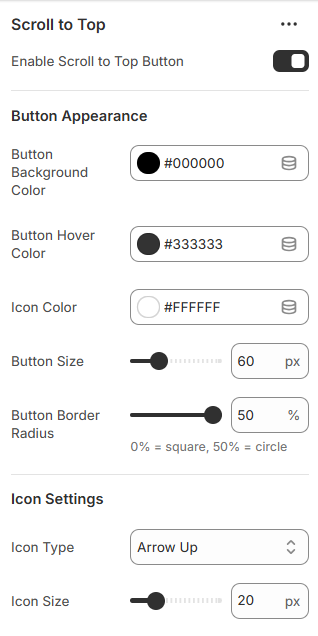 two ----- 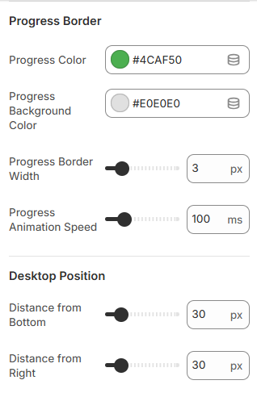 two ----- 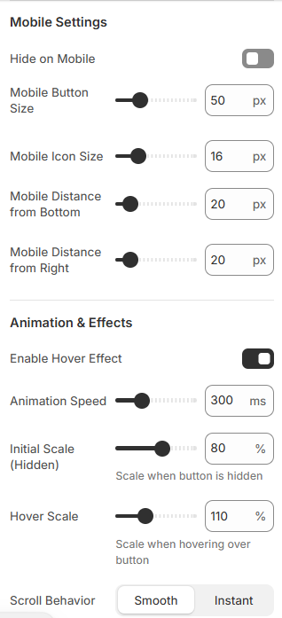 two ----- 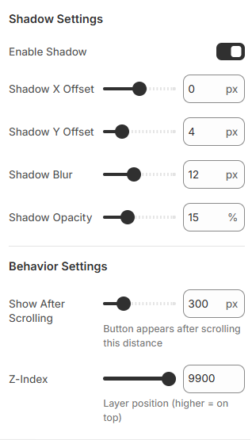
-
Settings Overview:
Enable Button: Toggle the scroll-to-top button on or off. - Button Appearance: Set background color, hover color, icon color, size, and border radius.
- Icon Settings: Choose icon type (arrow, chevron, double arrow, caret, or text) and icon size.
- Progress Border: Customize progress indicator color, background, stroke width, and animation speed.
- Position (Desktop & Mobile): Set distance from bottom/right and adjust size for mobile devices.
- Animation Effects: Enable hover effects, adjust animation speed, and scale on show/hide and hover.
- Scroll Behavior: Choose smooth or instant scroll back to top.
- Shadow Settings: Add shadow with X/Y offset, blur, and opacity.
- Behavior Settings: Set scroll threshold for when the button appears and its z-index position.
-
This feature improves user navigation, making it easier for visitors to return to the top of the page. Fully customizable options ensure it matches your store's style and branding.
Shop the Look
-
This section allows you to showcase curated product combinations with a visually appealing layout. You can overlay product hotspots on a background image to highlight individual products.
-
one ----- 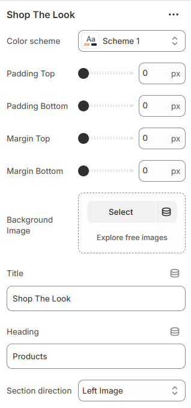
-
Settings Overview:
Color Scheme: Choose a color scheme for text and accents. - Spacing: Adjust padding and margin (top & bottom) for the section.
- Background Image: Upload a main image to display the curated look.
- Section Title & Heading: Add a title for the section and a heading above the product listings.
- Section Direction: Choose layout orientation: left-image (row) or right-image (row-reverse).
-
Product Hotspots:
Select Product: Choose a product from your store to associate with a hotspot. - Position: Set horizontal (left) and vertical (top) positions for the product hotspot on the image.
- Dot Color: Customize the color of the hotspot marker.
-
This section is perfect for visually engaging customers, showing them full outfits or curated looks, and linking each product directly to its product page for easy shopping.
Store Location
-
Highlight your physical store locations with optional map coordinates. Each block can display a store name, full address, and latitude/longitude for mapping.
-
one ----- 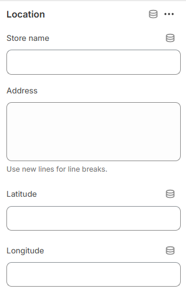
- Spacing – Adjust padding and margin (top & bottom) for the section.
- Location Block – Add one or more stores with:
- Title – Store name.
- Address – Full address (use line breaks for multiple lines).
- Latitude & Longitude – Optional coordinates for maps.
-
This section helps customers easily find your physical store locations.
Mavro Theme – Customer Support
Support Section
-
The Support section highlights your customer service options, providing quick access to live chat, help guides, or other support channels.
-
one ----- 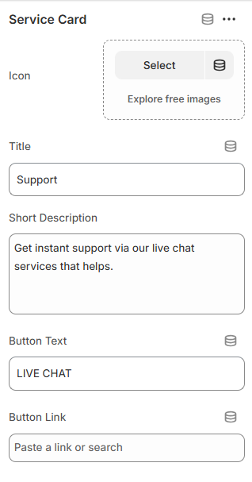
- Color Scheme – Choose the section color style.
- Padding – Adjust top and bottom spacing.
- Button Style – Select button type, size, and hover animation.
- Service Card Block – Add up to 4 support cards with:
- Icon Image – Upload an image or icon for each card.
- Title – Name of the service.
- Short Description – Brief explanation of the support option.
- Button Text & Link – Call-to-action for live chat or support page.
-
This section allows you to showcase key support options prominently, helping customers quickly find assistance.
Mavro Theme – Customer Reviews
Testimonials
-
The Testimonials section showcases customer reviews, ratings, and feedback to build trust and highlight your store’s credibility.
-
one ----- 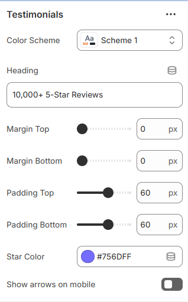
- Color Scheme – Select the section color style.
- Heading – Add a title for the testimonial section.
- Padding & Margin – Adjust spacing (top & bottom).
- Star Color – Customize rating star color.
- Show Arrows on Mobile – Enable navigation arrows for mobile devices.
- Text Review Block – Add reviews without images.
- Image Review Block – Add reviews with customer images.
- Block Fields – Include rating, title, description, author, and date.
- Max Blocks – Display up to 20 reviews.
-
These options help you display authentic customer feedback in a visually appealing and trust-building way.
Mavro Theme – Promotional Sections
Text Marquee
-
The Text Marquee section displays continuously scrolling text for announcements, promotions, or highlighted messages.
-
one ----- 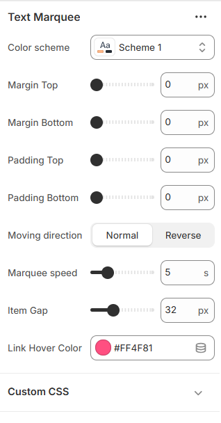
- Color Scheme – Select the section color style.
- Margin & Padding – Adjust spacing (top & bottom).
- Moving Direction – Set scrolling direction (Normal or Reverse).
- Marquee Speed – Control scrolling speed (in seconds).
- Item Gap – Adjust spacing between marquee items.
- Link Hover Color – Customize hover color for links.
- Marquee Items (Block) – Add multiple scrolling text items.
- Content – Add rich text for each marquee item.
-
These options allow you to create dynamic scrolling announcements with flexible styling and spacing control.
Mavro Theme – Content Sections
Text With Image
-
The Text With Image section allows you to combine images with descriptive content in a flexible layout.
-
one ----- 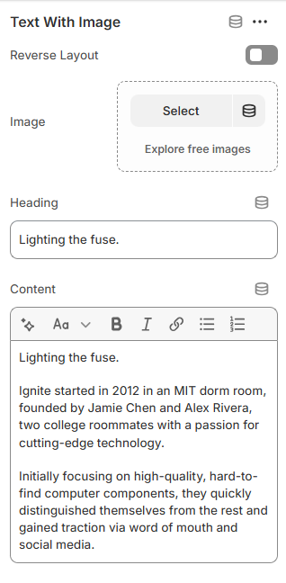
- Color Scheme – Select the section color style.
- Padding Top & Bottom – Adjust vertical spacing.
- Intro Block – Add section title and subtext (limit: 1).
- Text With Image Block – Add up to 2 content cards.
- Reverse Layout – Swap image and text positions.
- Image – Upload featured image.
- Heading – Add card title.
- Content – Add rich text description.
-
These options help you create visually balanced content sections with flexible image and text alignment.
Mavro Theme – Promotional Sections
Thin Countdown
-
The Thin Countdown section displays a promotional message with a countdown timer and optional call-to-action button.
-
one ----- 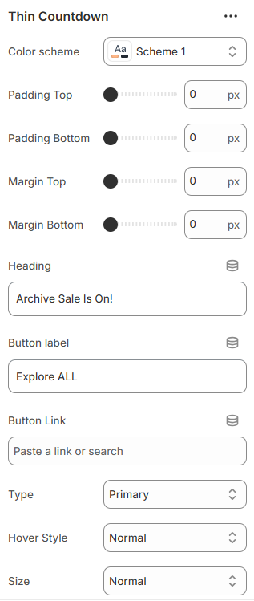 two ----- 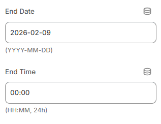
- Color Scheme – Select the section color style.
- Padding & Margin – Adjust spacing (top & bottom).
- Heading – Add promotional text.
- Button Label & Link – Set button text and destination URL.
- Button Style – Choose primary, secondary, outline, or underline.
- Button Hover Style – Select animation direction.
- Button Size – Adjust size or set full width.
- End Date & Time – Set countdown expiration (YYYY-MM-DD & HH:MM).
-
These options allow you to create urgency-driven promotions with customizable styling and layout control.
Mavro Theme – Page Header Sections
Title Bar
-
The Title Bar section allows you to display page titles with multiple layout styles, background images, and breadcrumb controls.
-
one ----- 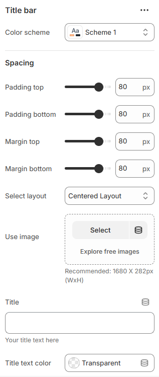 two ----- 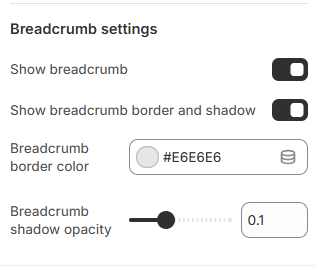
- Color Scheme – Select the section color style.
- Layout Type – Choose between Simple Centered or Advanced Image layout.
- Layout 1 – Add background image and customize title color.
- Layout 2 – Add title, subtitle, text colors, and image layout options.
- Image Layout Type – Select Half (50/50 split) or Full background style.
- Overlay Opacity – Adjust image overlay shadow (Full layout only).
- Breadcrumb Settings – Enable breadcrumb, border style, color, and shadow opacity.
- Spacing – Control padding and margin (top & bottom).
-
These options provide flexible page header designs with customizable layouts, images, and breadcrumb styling.
Mavro Theme – Promotional Sections
Trust Bar
-
The Trust Bar allows you to highlight key store benefits such as free shipping, secure payments, and customer support.
-
one ----- 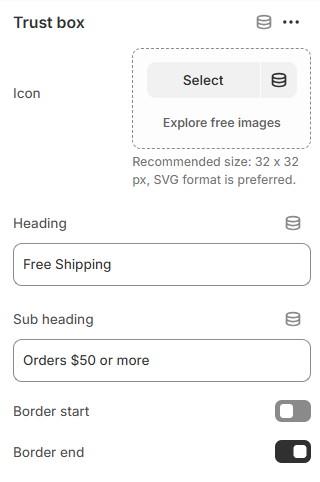
- Color Scheme – Select the section color style.
- Margin Top & Bottom – Adjust spacing above and below the section.
- Border Top & Bottom – Enable section borders.
- Full Width – Display the section in full-width layout.
- Column View – Show trust items in column layout.
- Trust Box (Block) – Add multiple trust items.
- Icon – Upload a 32×32px SVG icon (recommended).
- Heading – Add main trust message.
- Sub Heading – Add supporting description text.
- Item Borders – Enable left or right border per item.
-
These options help you showcase important store guarantees and build customer trust effectively.
Mavro Theme – Media Sections
Video With Text Overlay
-
This section allows you to display a responsive video banner with overlay text and customizable action buttons.
-
one ----- 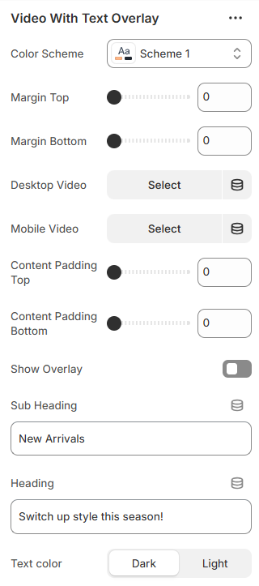 two ----- 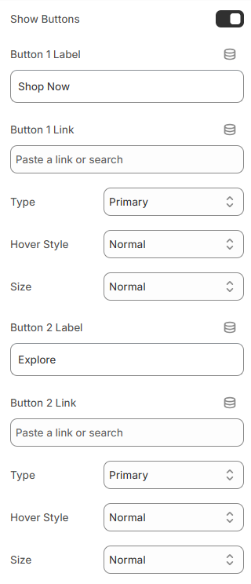
- Color Scheme – Select the section color style.
- Margin Top & Bottom – Adjust spacing above and below the section.
- Desktop Video – Upload video for desktop devices.
- Mobile Video – Upload video for mobile devices.
- Content Padding – Control inner spacing (top & bottom).
- Video Overlay – Enable overlay with customizable color.
- Sub Heading – Add small introductory text.
- Heading – Add main banner title.
- Text Color – Choose light or dark text style.
- Show Buttons – Enable up to two action buttons.
- Button Labels & Links – Set button text and destination URL.
- Button Style – Choose primary, secondary, outline, or underline style.
- Button Hover Animation – Select slide animation direction.
- Button Size – Adjust button size or set full width.
-
These options allow you to create an engaging video hero section with flexible text and call-to-action styling.
Mavro Theme – Sections
Wishlist
-
This section allows customers to save their favorite products to a personal wishlist. It helps visitors keep track of items they are interested in and can improve return visits and conversions.
-
Settings Overview:
Color Scheme: Choose a color scheme for text, buttons, and accents. -
The wishlist section integrates seamlessly with your product pages, enabling customers to add and manage their favorite products easily.
Every Page, Perfectly Designed
Pages Overview
-
Mavro includes beautifully designed templates for every standard page in a Shopify store. Each template is fully customizable via the theme editor and is built for both aesthetics and conversion.
-
Standard Page Templates
Home Page:Fully flexible — build your homepage by combining any of Mavro's 38+ sections. No fixed layout; arrange and stack sections to create any homepage structure you envision.
-
Collection Page:
Displays all products in a collection with filterable, sortable grid or list views. Customize the number of columns, filter sidebar position, and whether to show a collection banner at the top.
-
Product Page:
Features a full product detail view with image gallery, variant selector, quantity picker, Add to Cart button, and product description. Supports tabs for additional information, shipping details, and reviews.
-
Cart Page:
Displays cart contents with product thumbnails, quantity controls, and order notes. Can also be configured as a Cart Drawer (see Cart settings).
-
Blog Page & Article Page:
A clean, readable layout for your blog. The blog index lists articles with featured images and excerpts. Individual article pages support full-width content, author details, and a comments section.
-
About Us / Custom Pages:
Use Shopify's Pages feature to create custom pages (About Us, FAQ, Contact, etc.). Apply any Mavro page template to these for a consistent branded experience.
-
Contact Page:
Includes a built-in contact form, optional store details, and map embed. Customers can reach you without leaving your site.
-
Search Results Page:
Displays search results in a filterable product grid, consistent with the collection page experience.
-
404 Page:
A custom-designed "Page Not Found" page with a search bar and suggested links, helping customers find their way back instead of leaving your store.
-
Password Page:
A customizable coming-soon page displayed when your store is not yet launched. Add your logo, brand message, and email signup to begin building your list before launch.
Built for Speed
Speed & Performance
-
Mavro is engineered with performance as a priority. A fast-loading store improves the customer experience, reduces bounce rates, and positively impacts your Google search ranking. Here's what Mavro does to keep your store fast — and what you can do to maintain it.
-
Built-in Performance Features
Lazy Loading Images:Mavro loads images only when they're about to enter the viewport, significantly reducing initial page load time — especially on image-heavy pages.
-
Optimized JavaScript:
Theme scripts are deferred and loaded asynchronously so they don't block the initial page render. Critical CSS is inlined for above-the-fold content.
-
Responsive Images:
Mavro automatically serves appropriately sized images based on the visitor's screen size, avoiding unnecessarily large image downloads on mobile devices.
-
Best Practices for Maintaining Speed
Optimize Your Images Before Uploading:Compress product and banner images before uploading. Use WebP format when possible (Shopify converts uploaded images to WebP automatically). Aim for file sizes under 200KB for most images.
-
Limit Installed Apps:
Every app you install may add scripts that slow down your store. Only keep apps that are actively providing value. Uninstall apps you're not using — even inactive apps can leave code behind.
-
Use Fewer Custom Fonts:
Each font family and weight you load adds an additional network request. Stick to 1–2 font families with only the weights you actually use.
-
Test Your Store Speed:
Use Google PageSpeed Insights (pagespeed.web.dev) or Shopify's built-in speed score (Online Store → Themes → View report) to identify performance bottlenecks and track improvements over time.
Get Found Online
SEO Settings
-
Mavro is built with SEO best practices baked in, giving your store a strong foundation for ranking in search engines. Combined with Shopify's built-in SEO tools, you can optimize your store effectively without needing technical expertise.
-
What Mavro Does for SEO
Semantic HTML Structure:Mavro uses proper heading hierarchy (H1 → H2 → H3) and semantic HTML elements across all templates, making it easy for search engines to understand your page content.
-
Structured Data (Schema Markup):
Product pages include Product schema markup automatically, helping Google display rich results like star ratings, price, and availability directly in search results.
-
Fast Load Times:
Page speed is a confirmed Google ranking factor. Mavro's performance optimizations (see Speed & Performance section) directly contribute to better search rankings.
-
SEO Settings You Should Configure
Page Titles & Meta Descriptions:For every product, collection, blog post, and page — go to Edit website SEO (at the bottom of the edit screen) and write a unique, keyword-rich page title (50–60 characters) and meta description (120–160 characters).
-
Image Alt Text:
Add descriptive alt text to all product images. In Shopify, click on an image in the product editor and fill in the Alt text field. This helps search engines understand your images and improves accessibility.
-
URL Handles:
Keep URLs short and descriptive. Shopify auto-generates handles from product/page titles, but you can edit them. Avoid special characters, numbers, and generic slugs.
-
Sitemap & Robots.txt:
Shopify automatically generates a sitemap (yourstore.com/sitemap.xml) and robots.txt file. Submit your sitemap to Google Search Console to help Google discover and index your pages faster.
-
Blog for Content Marketing:
Use Mavro's blog template to publish keyword-targeted articles in your niche. Consistent, quality blog content is one of the most effective long-term SEO strategies for Shopify stores.
Common Issues & Solutions
Common Issues & FAQ
-
If you run into any issues while setting up or using Mavro, check the solutions below before reaching out to support. Most common issues can be resolved quickly.
-
Installation Issues
Q: The theme upload failed. What should I do?Make sure the .zip file is not corrupted and has not been renamed or modified after download. The file must be the original .zip directly from your purchase — do not unzip and re-zip it. Try uploading again using a different browser if the issue persists.
-
Q: After publishing Mavro, my store looks unstyled or
broken.
This usually means you need to configure your sections and content. A freshly published theme starts with a blank canvas — add your sections, content, menus, and logo through the Customize editor. If styles appear missing, try clearing your browser cache (Ctrl+Shift+R or Cmd+Shift+R).
-
Customizer Issues
Q: Changes I make in the customizer don't seem to save.Always click the Save button in the top-right corner of the customizer after making changes. Navigating away without saving will discard your edits. If the Save button is grayed out, try refreshing the customizer and making your changes again.
-
Q: A section is not appearing on my page.
In the customizer, check whether the section is toggled on — some sections have a visibility toggle (eye icon) at the top. Also verify you're editing the correct page template; changes made to the homepage won't appear on product pages, for example.
-
Display Issues
Q: My product images look stretched or distorted on the collection page.Go to Theme settings → Product card and set a consistent Image ratio (square, portrait, or landscape). This forces all cards to the same aspect ratio, regardless of original image dimensions. For best results, upload all product images with the same dimensions.
-
Q: The header appears behind some content sections on
mobile.
This can happen when a sticky or transparent header overlaps content. If using a transparent header, add a top padding to your first section that matches the header height. Check the Header settings for a "Header overlap" or "Top offset" option.
-
Cart & Checkout Issues
Q: The free shipping progress bar is not showing the correct amount.Make sure the threshold set in Theme settings → Cart exactly matches your free shipping rule in Settings → Shipping and delivery. The bar reads the theme setting, not your Shopify shipping rules, so they must be kept in sync manually.
-
Q: Customers can't see their currency in the currency
switcher.
Verify that you've enabled the relevant currencies in Settings → Markets in your Shopify admin. Also confirm the currency selector is enabled in Mavro's Header or Footer settings. Note: currency switching requires your store to be on Shopify Payments.
-
App Compatibility
Q: A third-party app is not displaying correctly with Mavro.Most apps that inject code into themes may require minor CSS adjustments to fit Mavro's design. Check the app's documentation for theme compatibility notes. If the issue persists, contact the app developer with your store URL and a description of the problem — they can often provide a fix or custom CSS snippet.
-
Q: My page speed score dropped after installing an app.
Many apps add JavaScript and CSS to every page of your store. Audit your installed apps and remove any that are no longer in use. Use the Shopify App Store's reviews to find lightweight alternatives for common functionality.
We're Here to Help
Get Support
-
Our team is committed to ensuring your experience with Mavro is smooth and successful. If you've checked the FAQ and documentation and still need help, here's how to get in touch.
-
Before Contacting Support
Check the Documentation First:Most setup questions are answered in this documentation. Use the sidebar navigation to find the section relevant to your issue.
-
Check the FAQ Section:
The Common Issues & FAQ section above covers the most frequently encountered problems and their solutions.
-
Try a Fresh Browser:
Many display issues are caused by cached files. Try viewing your store in an incognito/private browser window or clearing your browser cache before reporting a bug.
-
How to Submit a Support Request
Provide the Following Information:To help us resolve your issue as quickly as possible, please include: (1) your store URL, (2) a clear description of the issue, (3) steps to reproduce the problem, (4) screenshots or screen recordings if possible, and (5) which browser and device you're using.
-
Response Time:
We aim to respond to all support requests within 24–48 business hours. Support is available Monday to Friday. Requests submitted over the weekend will be addressed on the next business day.
-
What's Included in Theme Support
Covered by Support:Bug reports and issues directly caused by the Mavro theme code, questions about using and configuring built-in theme features, and assistance with theme installation and updates.
-
Not Covered by Support:
Customizations beyond the theme's built-in settings (e.g., custom code requests), third-party app integrations and conflicts, general Shopify platform questions, and business or product-related advice. For custom development work, we recommend consulting a Shopify Expert.
-
Useful Resources
Shopify Help Center:For questions about Shopify platform features (products, shipping, payments, orders), visit help.shopify.com — Shopify's comprehensive support center with guides and 24/7 live chat.
-
Shopify Community Forums:
Connect with other Shopify merchants and developers at community.shopify.com to share tips, ask questions, and learn from the broader Shopify ecosystem.
Connect with the World via Social Media
Social Media
Social media integration is essential for building brand presence and driving traffic to your store. Mavro makes it easy to link your social profiles across the header, footer, and dedicated sections.
How to Add Social Links
Go to Theme Settings → Social MediaIn the customizer, click Theme settings → Social media. Paste your full profile URLs into the fields for each platform — Facebook, Instagram, X (Twitter), TikTok, Pinterest, YouTube, Snapchat, and more.
Once added, your social icons will appear in the Header (if enabled in Header settings) and in the Footer automatically. You can also enable them within specific sections that support social icon display.
Create a loyal customer base by fostering direct communication through social media, strengthening your brand's presence and reach.